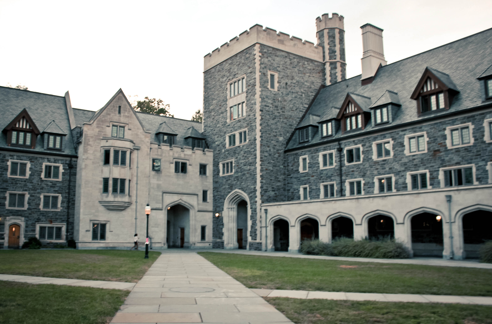

This is my website and stuff
Based on its history of expanding into West Philadelphia, Penn now takes a different approach to development. After learning from the consequences of pushing westward into existing communities, Penn now prioritizes collaboration and eastward expansion to make University City a central hub within Philadelphia.
Without Penn’s physical expansion from about 1948 through the 1960’s, University City, the thriving institutional neighborhood surrounding campus, would not exist today. While Penn’s development played a key role in creating the vibrancy and innovation on and around campus, the means to achieve this end – displacing residents and building over communities has irreversibly stained the University’s history with West Philadelphia. But by establishing community partnerships and moving physical development from west to east, Penn is now growing in a way that helps amend historical tensions while also contributing to the boom of University City.
Support for the Vision
In the first half of the 20th century, College Hall and the Benjamin Franklin Statue were surrounded by a congested mix of noisy cars, trolley lines, and pedestrians walking on unattractive concrete sidewalks.
|  |
Credit - Luke Chen |
fig.1 - Picture of Locust Walk covered in trolley lines |
In 1948, Penn created its first Campus Master Development plan to establish a vision for a pedestrian-oriented, connected campus. Insert quote from Development Plan to give explicit vision
“We were looking to opportunities to expand across Walnut and Chestnut to create a sense of community further out from central campus,” Datz said. proident, sunt in culpa qui officia deserunt mollit anim id est laborum.
Over the next two decades, Penn’s vision moved swiftly into becoming a reality as its development plans benefitted from national policies and citywide support for urban renewal – a movement to revitalize and restructure cities across the country after World War II.
Coupled with the post-war research pressure to compete with other universities, federally funded urban renewal projects and Philadelphia’s reformist leadership created an ideal environment for Penn to delve into an era of rapid expansion. Between 1953 and 1970, Penn built 93 new buildings, including the high-rise dorms and Van Pelt Library.
While policies such as the Federal Housing Act of 1959 provided funds for universities to develop, the City of Philadelphia created agencies such as the Redevelopment Authority to help Penn carry out its development plans.
 |
Credit |
fig.1 - A view of the pulpit rock in Norway. Thanks
to Matt Williams for the photo |
Insert quote about importance of universities in driving urban growth in the 1950s and 60s The City’s support for Penn’s vision can be seen as early as 1950 when Philadelphians voted overwhelmingly in support of having the West Philadelphia trolley lines run underground, rather than disruptively through Penn’s campus. Without the passage of the referendum, the trolley lines would have prevented Penn from building the pedestrian-oriented campus it envisioned.
“The referendum indicated that the city was behind the idea that the needs of the people should give way to the University’s needs,” Lloyd said.
In 1962, the Philadelphia City Planning Commission (PCPC) designated a University Redevelopment Area of 80 blocks bound by Market and Spruce Streets, and 42nd Street and Schuylkill Avenue.
 |
Credit |
fig.1 - A view of the pulpit rock in Norway. Thanks
to Lucas for making the caption work |
Throughout the 1960’s, the buildings on what is today Locust Walk were demolished to make way for Penn’s vision of a pedestrian, insulated central section of campus. Several businesses and about 650 homes were displaced, Datz said.
90% of the people displaced during the development projects – including Hill Square, administrative offices, classrooms and the Inn at Penn – were white, and most of the displaced residents left quietly with the compensation provided by Penn and the City.
While some Walnut Street property owners threatened to legally challenge their displacement, Penn and the Philadelphia Redevelopment Authority negotiated deals with the owners to quiet criticism. Penn promised the Pagano family, who owned many of the prior Walnut Street businesses, the right to redevelop the commercial corners at 38th and Chestnut.
A Move into Tension
After a relatively successful period of expansion, Penn continued to take part in outward development in the area north of Market Street – a mostly African American neighborhood termed the “Black Bottom.”
“Things in Penn’s development had gone pretty well from 1950 through about 1966, so Penn wasn’t apprehensive when continuing to expand north of Market Street,” Lloyd said. “But African Americans in that area protested since they did not see the interests of the University as greater than their own. The mood of the city changed.”
Because this area was outside of Penn’s legally designated area for redevelopment, the West Philadelphia Corporation – a coalition of higher education and medical institutions organized by Penn in 1959 – spearheaded the plans for new projects, such as the University City Science Center.
Quote about how redeveloping this area was in Penn’s interest
According to Census Data, the population in this area fell from 4,603 people in 1960 to 654 in 1970.
The Black Bottom Association, a community group of African American residents and business owners, led several protests against the urban renewal projects. Though the WPC was technically leading the redevelopment, the protests were mostly directed toward Penn.
Insert quote about protests from African American members
In 1969, Penn students filled College Hall in protest against the University’s expansion and displacement of African American residents. Current Netter Center director and undergraduate at the time, Dr. Ira Harkavy led the school in calling out Penn’s role in the destruction of West Philadelphia communities.
Insert quote from Dr. Harkavy
Rather than calling the cops to evict the protesting students, President Harnwell opened up discussions with the students. The protesters reached an agreement with the Trustees to stop expanding and maintain low-cost housing in the neighborhood.
Ignorance Is Not Always Bliss
After 1970, Penn stopped expanding beyond campus lines. While the protests definitely deterred further expansion, Penn stopped developing largely because the economy had slowed and the projects could not move forward without more federal funding. Some plots that had already been cleared sat vacant for over a decade due to a lack of funding.
“Expansion had been overdone in the 60’s and Penn as a developer essentially ran out of money in the 70’s after completing the Superblock and high rises,” Lloyd said.
After stopping westward expansion, Penn insulated itself as a “neighborhood within a neighborhood” through the 70s and most of the 80s.
Penn’s halted expansion translated into a period of isolation from the community. Though protests against development ceased, Penn’s retraction from the community did not solve clashes with the community.
Crime became a despairing problem for Penn administration. No longer seen as a champion of urban renewal efforts, Penn’s expansion had become a target of criticism from those who shamed the one-sided benefits of the University’s development.
Establishing a Norm of Collaboration
In 1992, the University established the Center for Community Partnerships, known today as the Netter Center. The establishment of this center marks the University’s transition into working not as an isolated or entitled institution in the neighborhood, but instead as a conscious collaborator in the community.
Insert quote from Dr. Harkavy about establishment of Netter
“Dr. Harkavy helped Penn get in touch with the soul of the University,” Sorrentino said.
When developing, Penn now focuses not only on avoiding displacement and including community input, but also on genuinely revitalizing the land on which it is building. Both the Penn Park and South Bank projects represent Penn’s new approach to development.
Penn has undergone an evolution in the way it approaches growth.
“From taking and clearing land in the 1950s to the community initiatives of the 1990s, we now always try to build in conjunction with the community to support the community,” Datz said.
“The way you grow matters,” Caronoli said.
Though development with the community has avoided worsening tensions, an approach of collaboration comes with its own setbacks. The ongoing conflict over the 40th and Pine mansion – a Penn-owned historic property that is taking over a decade to develop – shows how community input can significantly slow the University’s plans.


Woodland Terrace Homeowners, a group of community members that live near the property, is heading two legal battles against the University’s plans to develop the historic mansion into a residential complex.
Quote from Paul Boni / community member about why they oppose Penn’s plan
Though Penn may never achieve a perfect relationship with the community, Penn now consciously includes the community in its decision-making process, even when the resulting opposition makes development more difficult.
University City Today
University City is now seen as one of the most thriving, upcoming areas in the country. UCD’s most recent data makes the neighborhood’s progress clear: Over the past five years, over $4.6 billion has been invested into real estate development, with over 2,000 new housing units anticipated by the end of 2016. As the office occupancy rate rose to 96% this year, University City is expected to have over 80,000 jobs by 2016. The number of restaurants – up by 17% since 2009 – has also increased with the residential and office growth.
The buildings and institutions that Penn helped create has spurred an influx of i “It is impossible to imagine what University City is today without the role that Penn has had,”
Now that University City has become so attractive, the boundaries of what is considered downtown Philadelphia – Center City – may be extending westward to include the neighborhood that Penn has helped create.
With the new Penn-leased FMC and EVO towers, the changing skyline of the city visually shows the increasing inclusion of University City in the flashiness and height of central Philadelphia.
For the first time in fifty years, the Census data shows that the University City area population is increasing for the first time in fifty years.